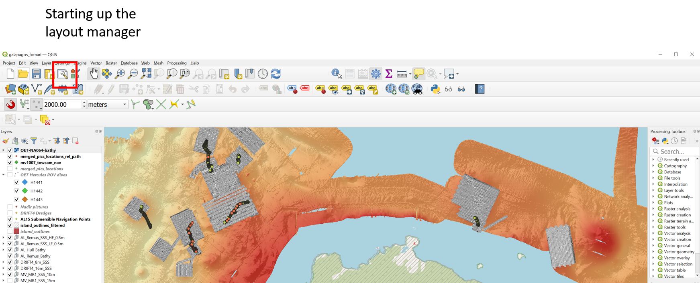
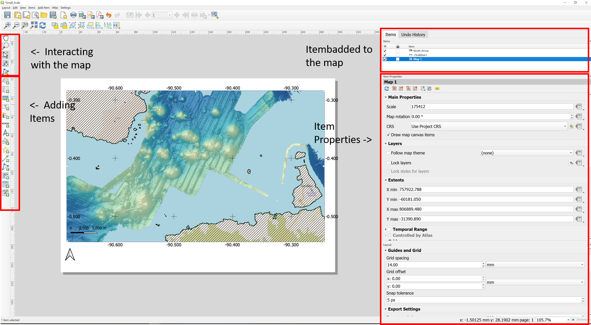
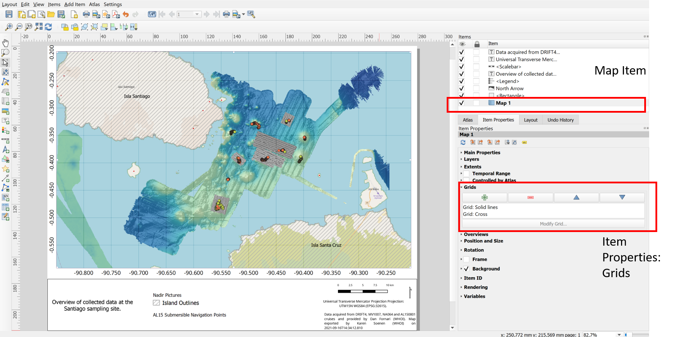

Making Maps¶
Making maps in qgis is done using the tool “layout Manager”
Symbology in qgis lay-out itself
Right click on layer -> properties -> symbology
Cartography principles layout manager
The layout manager¶
To get to the layout manager from the main QGIS project, click the layout manager button, which will open a new tab, you can either choose a template or create a new layout.
The fornari qgis project has several layout templates of which you can choose one
[Give a list of all the layout templates in there]
Each template contains the following items:
Map
Scalebar
Legend
North arrow
Interacting with the layout and adding items to the map is done by using the item bar on the left. When adding items to the map, they will appear in the “Items” list on the right. Each item has specific properties that can be adjusted in the Item properties box, under “Items”. Make sure that the item you want to adjust is clicked on (=blue), before you can adjust that specific item.
Adjusting Coordinate grids¶
Select the Map Item
Select in the Item Properties of the map -> Grids
There should be 2 grid types set up and enables: The grid that shows ticks every degree and labels them. The other grid shows tick every minute (1degree/60) You can always set up your own grids by clicking the + sign (add new grids).
